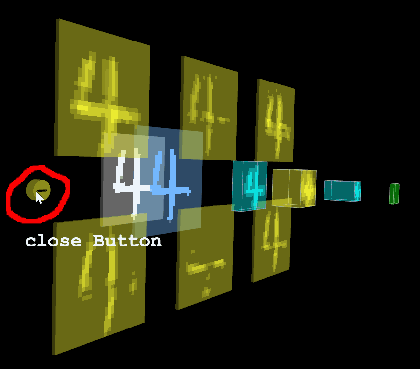

Dense layer is the fully connected layer.
Constructor
〔Method 1〕Use units
TSP.layers.Dense( { units: Int } );Arguments
Name Tag |
Type |
Instruction |
Usage Notes and Examples |
|---|---|---|---|
|
units |
Int | Amount of nodes of FC layer | units = 100 means there are 100 neurals in the fully connect layer |
|
paging |
Bool | Enable Pagination, more about paging | Since the long 1D layer could make the model hard to visualize, we use paging. true Enable; false [Default] Disable |
|
segmentLength |
Int | Amount of nodes in one page, only take effect when "paging" is enabled | 200[Default] 200 nodes in each page |
|
segmentIndex |
Int | The initial start index of first page, only take effect when "paging" is enabled | 0[Default] |
|
overview |
Bool | Look layer Text from different angle, more about overview | false[Default] |
|
name |
String | Name of this layer. Highly recommend to arrange to make code more readable. | name: "layerName" |
|
color |
color format | Color of layer | Dense default is light green #00ff00 |
|
closeButton |
Dict | Close button appearance control dict, more about close button | display : Boolean. true[default] Show button, false Hide button ratio : Int. Times to normal size, default is 1 For example, 2 means twice the normal size |
|
initStatus |
String | Layer status at beginning. Open or Close | close[default] : Closed at beginning |
|
animation- |
Int | The speed of open and close animation | Integer for multiple of speed. For example, 2 for 2 times of basic speed |
Properties
.inputShape : [Int]
filter_center_focusThe shape of input tensor, for example inputShape = [ 28, 28, 3 ] represents 3 feature maps and each one is 28 by 28
filter_center_focusAfter model.init() data is available, otherwise is undefined.
.outputShape : [Int]
filter_center_focusThe shape of output tensor is 1-dimensional. 1️⃣
filter_center_focusThe shape of output tensor. For example outputShape = [ 1000 ] represents the output through this layer has 1000 outputs
filter_center_focusAfter model.init() data is available, otherwise is undefined
.neuralValue : [Int]
filter_center_focusThe intermediate raw data after this layer.
filter_center_focusAfter load and model.predict() data is available, otherwise is undefined.
.name : String
filter_center_focusThe custom name for this layer.
filter_center_focusOnce created, you can get it.
.layerType : String
filter_center_focusType of this layer, return a constant: string Dense.
filter_center_focusOnce created, you can get it.
Method
.apply( layer ) : void
filter_center_focusThis method only used in Function Model (Non-sequential, Graph structure).
filter_center_focusLink this layer to layer which is the previous layer.
filter_center_focusTo crete a link between this layer and the previous layer. You don't need to use this method specifically to create links in Sequential Model; Instead, you can simply add layers along the lines of Keras or Tensorflow.js build the model syntax.
let inputLayer = new TSP.layers.Input2d( {
shape: [28, 28]
} );
let denseLayer = new TSP.layers.Dense( {
unit: 1000
} );
denseLayer.apply( inputLayer );.openLayer() : void
filter_center_focusClick on the layer directly to open it by interacting directly with the object in the 3D scene

filter_center_focusIn code, calling the method to open it.
let denseLayer = new TSP.layers.Dense( {
// configure some parameters for Dense.
} );
model.add( denseLayer );
// ... add more layers for model.
model.init();
// Call openLayer API to open layer.
denseLayer.openLayer();.closeLayer() : void
filter_center_focusTo close by interacting directly with objects in a 3D scene by clicking the close button

filter_center_focus In code, calling the method to close it.
let denseLayer = new TSP.layers.Dense( {
// configure some parameters for Dense.
} );
model.add( denseLayer );
// ... add more layers for model.
model.init();
// If this layer already opened, call closeLayer API to close layer.
denseLayer.closeLayer();Example
filter_center_focus Declare an instance of Dense to facilitate reuse
let denseLayer = new TSP.layers.Dense( {
units: 1000,
name: "Dense1",
initStatus: "open"
} );
model.add( denseLayer );filter_center_focusAdd Dense directly
model.add( new TSP.layers.Dense( {
units: 1000,
name: "Dense2"
} ) );Use Case
When you add convolutional layer Conv2D with Keras | Tensorflow | tfjs in your model the corresponding API is Conv2d in TensorSpace.
| Framework | Documentation |
|---|---|
| Keras️ | keras.layers.Conv2D(filters, kernel_size, strides=(1, 1)) |
| Tensorflow | tf.nn.conv2d(input, filter, strides, padding) |
| Tensorflowjs️ | tf.layers.conv2d (filters, inputShape) |
Tag Lookup
| Tag Icon | Meaning | Instruction |
|---|---|---|
| ⭐️ | Required | Must be provided, cannot be empty. Meanwhile constructor works properly if this arguments provided. Control arguments use default value. |
| üîß | Suggest | Recommended for giving. The API can work without them. |
| ⚙️ | Optional | As an auxiliary adjustment parameter when used, selectively added according to the specific situation The parameters here have no effect on the structure of the layer (3D visualized form). |
| üì¶ | Model | Configure the properties of Conv Layer. It changes the output shape. |
| üé® | Style | Override the properties in TSP.model (model configuration) |
| üé¶ | Animation | Override the properties in TSP.model (model configuration) |
Source Code